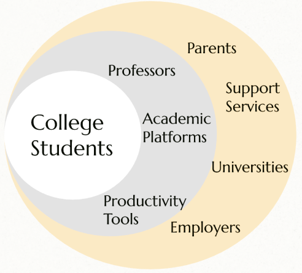

Chomp Clock
DIG3124 Principles of UX/UI Design Case Study Report
By Olivia, Jasmine, Justin, Khanh

By Olivia, Jasmine, Justin, Khanh
College students often struggle with effective time management while balancing academic work, clubs, and personal projects. This can lead to stress and decreased overall productivity.
Our goal is to develop an app that helps students manage their time more efficiently by organizing their workload, breaking coursework into manageable chunks, and including motivational features. The app will support better productivity habits, reduce stress, and help students stay on track with their academic goals.
Our target users are college students, part-time or full-time workers, and anyone who struggles with time management. We focus on managing assignments, classes, jobs, clubs, and other responsibilities.

Our target users are college students, part-time or full-time workers, and anyone who struggles with time management. We focus on managing assignments, classes, jobs, clubs, and other responsibilities.
In 2024
Statistics
| Competitors | Price | Customer | User Base |
|---|---|---|---|
| $0 | All age & status | 3 billion users | |
| Skylight Calendar and Frame | $319-$699 | Families | 1.3 million families |
| Notion | $10/mo Pro | Productive users | 100 million users |
Age: 21
Occupation: Full Time College Student
Location: Gainesville, FL
Frustration: Overwhelmed trying to balance assignments and club activities
Goals: Stay organized and manage time more effectively
Age: 22
Occupation: Full Time College Student
Location: Columbus, OH
Frustration: Difficulty with prioritizing work
Goals: Staying on top of deadlines
Age: 24
Occupation: Full Time College Student
Location: Tampa, FL
Frustration: Difficulty breaking up large assignments and losing track of time
Goals: Manage schedule to complete tasks on time
Jane feels overwhelmed balancing assignments and club activities.
Alex has difficulty prioritizing work and staying on top of deadlines.
Sophia struggles with managing large assignments and losing track of time.

Alerts students about upcoming assignments and helps them manage study time with engaging reminders, smart reminders, and wellness reminders.
Predicts the time required for assignments, converts tasks into calendar blocks, and provides urgent alerts for approaching deadlines.
Rewards users with points.
Tracks progress with a gamification system.
Encourages friendly competitions with friends.
Provides habit-based suggestions.
Priority ranking based on importance or personal preference.
Priority-based notifications.

Project 1: User researcher, recording.
Project 2: Persona, interview summary.
Project 3: Summary of Projects 1 and 2, prototype calendar tab, worked on the calendar tab to showcase tasks and urgent notices.
Project report: HTML code for the portfolio website.
Project 1: Stakeholder map, recording.
Project 2: Wireflow, interviews, affinity diagram, recordings.
Project 3: Prototype profile and notifications, worked on the profile page for stored information and the notifications page, recorded video presentation.
Project report: Website information.
Project 1: Market trends, recording, video composition.
Project 2: Editing, wireflow, interviews, affinity diagram, recordings, video composition.
Project 3: Prototype pro-active and welcome tab, worked on the flow, login setup, and priorities tab for adding classes/tasks, recorded video presentation.
Project report: HTML code for the portfolio website and website information.
Project 1: Competitive analysis, recording.
Project 2: Design requirements, journey map, interviews, affinity diagram, recordings.
Project 3: Prototype rewards tab, worked on the rewards page that includes challenges, points, rewards, and a leaderboard system, compiled team questions, and user-tested with two participants.
Project report: Designed the portfolio website look, template, and section structure.
Justin Xie
My main work on this project depended on each stage. During the initial stage, I focused mainly on market trends and group brainstorming. Market trend research was especially interesting because it required thinking about what information would actually help us build the project. Brainstorming also helped me understand what content and resources to look for, whether based on functionality or pain points. The Disney creative thinking exercises were particularly helpful in identifying pain points and ideas we might not have considered individually. In the second stage, I worked on interview questions, contributed to brainstorming for the affinity diagram, and worked on the wireflow. I enjoyed the practical use of tools like Figma and Canva. This stage helped me practice designing user flow, including what should be interactive and what the user process should look like. In the third stage, I focused on setting up prototype wireframes and worked on the pro-active feature. Building the final prototype taught me different ways to design functionality. In the final stage, while writing the report, I focused on inputting group content and worked on the HTML, CSS, and JavaScript for this page. Overall, this learning experience is one I will always value because I learned a lot from it.
Olivia Farino
In the first part of the project, I worked with my team to narrow down the problem we wanted to solve. I helped organize our ideas using Disney’s creative thinking method, which allowed us to establish our project's objective. I also developed both the demographic and psychographic profiles of our target users.
In the second part, I conducted an interview and helped summarize the other interviews we collected. This allowed us to gather preliminary data on user needs and identify common themes among them. I used this information to create user personas, which later helped the team in creating our affinity diagram.
In the third part, I contributed to building our Figma prototype and helped summarize the earlier parts of our project.
Overall, this project provided me with valuable experience in working with a team and building a solution from the ground up. Something that went well was the team’s ability to build each stage off of the previous one and create a cohesive solution to our initial problem. If we were to continue this project, we could improve by conducting more user testing and getting feedback on our interface in order to ensure that it functions as intended.
Khanh Ngoc Trinh
My experience throughout this project was very positive. One of the most valuable skills I developed was teamwork. Since this was a large, ongoing group project with team members collaborating online, I had many opportunities to improve how I communicate, coordinate responsibilities, and support others.
Over time, I learned how to better navigate shared responsibilities and adapt to the needs of the team. I also became more aware of my role within the group, especially in situations where responsibilities were not clearly defined. This helped me become more flexible and proactive.
During the first phase of the project, I was responsible for researching competitors. However, I realized that my approach could have been improved, as I included some companies that were not entirely relevant. This experience taught me the importance of clearly defining criteria and ensuring that research aligns closely with the project goals.
In the second phase of the project, I particularly enjoyed creating the user journey map. Analyzing the user experience helped me better empathize with users and identify key pain points, allowing me to discover more specific areas for improvement.
For the third phase, I worked on the rewards tab in the prototype. This was one of the most challenging yet enjoyable parts of the project, as I had to both develop the feature and learn how to use Figma at the same time.
Overall, this project has been a highly rewarding experience that strengthened both my collaboration and design skills.
Jasmine Xie
reflection